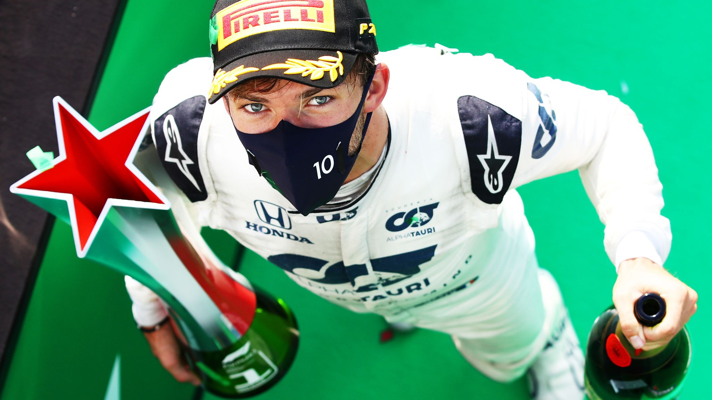

Champion Driver: Lewis Hamilton[7]
Champion Constructor: Mercedes-AMG Petronas[7]
The 2020 season was simultaneously one of the most unpredictable and most predictable seasons in Formula 1. Originally planned to have 22 races, the most in a single F1 season. Due to begin in Melbourne, the annual season opener, in March. However, due to the COVID-19 pandemic that gripped the world, the season start was postponed to July. Despite a shortened season and some races having to take place at the same track as was used in the previous race, there was no loss of drama or of spectacular entertainment.
The season began in Austria to empty stands, but the lack of fans didn't affect the racing. Nine drivers retired as Bottas won the first race of the season for the second consecutive year. This fails to mention the intensity of the on track action. Hamilton hit the rear of Albon's car as he was passed for second place in a race where if Albon passed Hamilton, the win was his for the taking. This led to Hamilton receiving a time penalty, with a storming Norris needing to finish less than five seconds behind Hamilton, he set the fastest lap of the race on the last lap and took his first ever podium.
The Styrian GP was won by Hamilton in a fairly uneventful race. While the following race in Hungary saw Verstappen lose his car on the wet and cold surface and hit the wall on his reconaissance lap. His engineers did an incredible job to get the suspension fixed in time for the beginning of the race. Not the only time Red Bull's incredible mechanics did more than their share towards the team effort. The British GP followed, and although recently having become a place of Hamilton dominance the script was different this year. Daniil Kvyat had a puncture at very high speed slamming into the wall hard. This was followed by a number of near end of race tyre failures. Carlos Sainz's tyre blew up while he was on for a fourth place finish, Bottas suffered a puncture which made him finish eleventh and Hamilton suffered a tyre delamination and puncture but still found his way across the line in first.

| Pos | Driver | Team | Wins | Poles | Podiums | Points | 1 | Lewis Hamilton | Mercedes | 11 | 10 | 14 | 347 |
|---|---|---|---|---|---|---|
| 2 | Valtteri Bottas | Mercedes | 2 | 5 | 11 | 223 |
| 3 | Max Verstappen | Red Bull | 2 | 1 | 11 | 214 |
| 4 | Sergio Perez | Racing Point | 1 | 0 | 2 | 125 |
| 5 | Daniel Ricciardo | Renault | 0 | 0 | 2 | 119 |
| 6 | Carlos Sainz Jr. | McLaren | 0 | 0 | 1 | 105 |
| 7 | Alexander Albon | Red Bull | 0 | 0 | 2 | 105 |
| 8 | Charles Leclerc | Ferrari | 0 | 0 | 2 | 98 |
| 9 | Lando Norris | McLaren | 0 | 0 | 1 | 97 |
| 10 | Pierre Gasly | AlphaTauri | 1 | 0 | 1 | 75 |
| 11 | Lance Stroll | Racing Point | 0 | 1 | 2 | 75 |
| 12 | Esteban Ocon | Renault | 0 | 0 | 1 | 62 |
| 13 | Sebastian Vettel | Ferrari | 0 | 0 | 1 | 33 |
| 14 | Daniil Kvyat | AlphaTauri | 0 | 0 | 0 | 32 |
| 15 | Nico Hulkenberg | Racing Point | 0 | 0 | 0 | 10 |
| 16 | Kimi Raikkonen | Alfa Romeo | 0 | 0 | 0 | 4 |
| 17 | Antonio Giovinazzi | Alfa Romeo | 0 | 0 | 0 | 4 |
| 18 | George Russell | Williams | 0 | 0 | 0 | 3 |
| 19 | Romain Grosjean | Haas F1 | 0 | 0 | 0 | 2 |
| 20 | Kevin Magnussen | Haas F1 | 0 | 0 | 0 | 1 |
| 21 | Nicolas Latifi | Williams | 0 | 0 | 0 | 0 |
| 22 | Jack Aitken | Williams | 0 | 0 | 0 | 0 |
| 23 | Pietro Fittipaldi | Haas F1 | 0 | 0 | 0 | 0 |